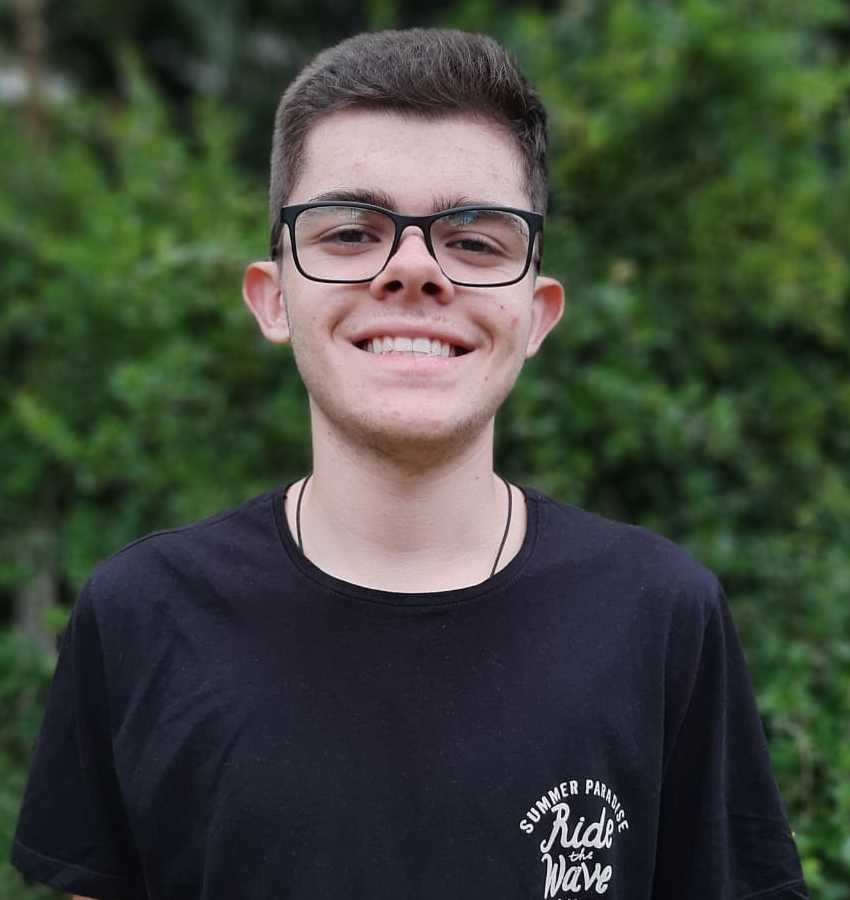

Josiney de SouzaProfessor | |
Angela RibeiroProfessor | |
Anthony Vinicius dos Santos MüllerAluno 2º Info A, responsável pelo site | |
|  | Gabriel Eduardo de SouzaAluno do IFC campus Brusque, bolsista e responsável pelo site |
Eduardo da Rocha WeberAluno 2º Info A, colaborador do projeto | |
Luiz Cirilo Tomasi NetoAluno 2° Info A, colaborador do projeto | |
 | Gabriel Ricardo Ramos de MoraesBolsista e administrador das redes sociais do projeto |